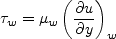

The purpose here is to provide a validation
case for turbulence models. Unlike verification, which seeks to establish that a model has been implemented
correctly, validation compares CFD results against data in an effort to establish a model's
ability to reproduce physics. A large sequence of nested grids
of the same family are provided here if desired. Data are also provided for comparison.
For this particular "essentially incompressible" flat plate case, the data are from theory.
This case is the same case used for
Flat Plate Verification; however, for the purpose of
validation here, different quantities of interest are focused on and compared.
The turbulent flat plate case should be run at
essentially incompressible conditions (for example, M = 0.2 or less in compressible CFD codes).
For the grids given below, running at a Reynolds number per unit length of Re = 5 million
is sufficient to achieve desired Retheta levels.
The following plot shows the layout of the simple
flat plate grids, along with typical boundary conditions.
(Note that particular variations of the BCs at the inflow, top wall, and outflow
may also work and yield similar results for this problem.)
Note that for this case the maximum boundary layer thickness is about 0.03 L, so the grid height
of y=L is far enough away to have very little influence. For example, a test in which the upper extent
was moved down to y=0.48 L only changed results (integrated drag or skin friction at x=0.97) by
less than 0.2%.
Grids are provided below. Note that different turbulence models exhibit different
sensitivities to minimum wall-normal spacing.
GRIDS
(same as those used for
Flat Plate Verification case)
Two quantities of interest are desired for comparison:
- Wall skin friction coefficient vs. Retheta (for 4000 < Retheta < 13,000)
- u+ vs. y+ (at Retheta=10,000)
Definitions are given here for the relevant quantities, including
Retheta, Cf, u+, and y+


- 


It should be noted that computing Retheta typically involves an additional post-processing
step for many CFD codes (numerically integrating to obtain theta). Although this
step is relatively straightforward for the flat plate, nonetheless some numerical errors
are unavoidably introduced which may vary depending on the postprocessing program employed.
When viewing comparisons, this additonal potential source of error should be taken into
consideration.
The following plot shows Retheta as a function of x for this flat plate case, from a
variety of different turbulence models. Clearly, the particular model makes some difference, but
the general trend can be discerned: Retheta increases from near zero at the plate
leading edge to somewhat over 14,000 at x=2.
A data file with a typical variation of Re_theta as function of x is given here:
retheta_variation_typical.dat.
Theoretical curves for comparison are given below.
For wall skin friction comparison, the Karman-Schoenherr (K-S) relation
(Schoenherr, K. E., Trans. SNAME. 40:279-313, 1932) is used:
For
u+ vs. y+, the law-of-the-wall based on Coles' mean velocity profile
(Coles, D., J. Fluid Mech. 1(2):191-226, 1956,
https://doi.org/10.1017/S0022112056000135 and
Coles, D., RAND Corp Rept. R-403-PR, 1962,
https://www.rand.org/pubs/reports/R403.html)
is used
![u^+ = \frac{1}{\kappa} {\rm ln} \left( y^+ \right) + C + \frac{2 \Pi}{\kappa}
\left[ {\rm sin} \left( \frac{\pi y}{2 \delta} \right) \right]^2](flatplateval_eqns/img9.png)
along with a van Driest type damping near the wall.
A program provided by P. G. Huang was used to compute these mean profiles.
See Bardina et al, NASA TM 110446, April 1997,
https://ntrs.nasa.gov/citations/19970017828
for more details.
The data files for these correlations are provided here:
Note that these particular theoretical correlations are not necessarily perfect. There is some uncertainty
in trying to match a wide range of experimental data. Results from these
correlations alongside other
theories (from White, F. M., "Viscous Fluid Flow," McGraw Hill, New York, 1974) are
plotted in the following figures:
White ("Viscous Fluid Flow," McGraw Hill, New York, 1974) also provides various theories for flat plate Cf as a function
of Rex (for example, see equations 6-112a, 6-121, and 6-134 in that reference). For the current case of
ReL=5 million (L=2), these equations can be plotted as a function of x, as follows (note that error bars
of 5% have been included although it is not clear what the error levels actually are):
Like the earlier plot of Cf vs Retheta, this plot provides a feel for the approximate
theoretical range of wall skin friction coefficients for this case. The data file that produced the above plot is:
cf_as_function_of_x.dat.
What to Expect:
(Other turbulence model results may be added in the future.)
Note that the OVERFLOW code has documented its results for this validation case (for the SA-noft2, SST, and SST-V
turbulence models) in NAS Technical Paper 2016-01 (pdf file)
(18.3 MB) by Jespersen, Pulliam, and Childs.
Return to: Turbulence Modeling Resource Home Page
Recent significant updates:
04/12/2022 - added plot of theoretical Cf vs x and provided data file
08/28/2020 - changed SST-V naming to SST-Vm
11/07/2017 - added link to discussion on effect of minimum wall-normal grid spacing
05/13/2016 - added BSL link
06/16/2016 - changed K-kL-MEAH2013 to K-kL-MEAH2015
08/20/2014 - added SSG/LRR-RSM-w2012 link
06/23/2014 - added typical variation of Re_theta with x for this case
Privacy Act Statement
Accessibility Statement
Responsible NASA Official:
Ethan Vogel
Page Curator:
Clark Pederson
Last Updated: 04/12/2022